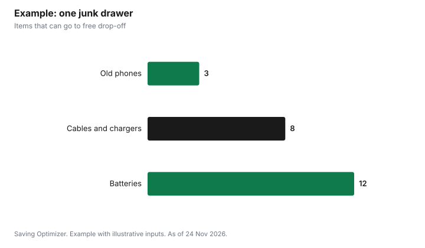

Technology · Canada
Recycling Old Electronics in Canada for Free

In most of Canada you can drop off old phones, laptops, TVs, printers and cables free at an approved depot. EPRA's Recycle My Electronics runs regulated programs in nine provinces, and Alberta's ARMA runs its own. Batteries go to Call2Recycle's 15,000+ drop-off spots. You already paid for this through the environmental handling fee when you bought the device.
Key takeaways
- EPRA (recyclemyelectronics.ca): regulated programs in nine provinces.
- Alberta: ARMA's program covers 500+ product types.
- Call2Recycle: household batteries up to 5 kg, 15,000+ drop-off spots (checked 24 Nov 2026).
- Wipe and sign out of devices before you drop them off.
- Tape battery terminals and never put batteries in the garbage.
Provincial drop-off programs
| Program | Where | What |
|---|---|---|
| Recycle My Electronics (EPRA) | Nine provinces | TVs, computers, phones, printers, cables and more |
| Alberta Recycling Management Authority | Alberta | 500+ product types; depot finder |
| Call2Recycle | All provinces | Household batteries up to 5 kg |
Before you drop off
- Back up what you need.
- Sign out of your accounts and turn off device tracking.
- Factory reset phones, tablets and computers.
- Remove SIM and memory cards.
- Tape the ends of lithium batteries.

Clearing the junk drawer: an example
Example: a drawer holds 3 old phones, 8 cables and chargers, and 12 batteries. All of it can usually go to free drop-off programs. Check if your phone is worth selling first.
See environmental handling fees and selling an old phone safely.
Sources
- Electronic Products Recycling Association, recyclemyelectronics.ca, checked 24 Nov 2026.
- Alberta Recycling Management Authority, Electronics Recycling Program, checked 24 Nov 2026.
- Call2Recycle Canada, Household batteries and FAQs, checked 24 Nov 2026.
Frequently asked questions
Is electronics recycling free in Canada?
Drop-off at approved depots is usually free. Environmental handling fees paid at purchase fund the programs.
Where do I recycle electronics?
Use recyclemyelectronics.ca in nine provinces, or ARMA's depot finder in Alberta.
Can I recycle batteries for free?
Yes. Call2Recycle takes household batteries up to 5 kg at more than 15,000 drop-off spots.
Should I wipe my phone before recycling?
Yes. Sign out, turn off tracking and factory reset it.
Can I put batteries in the garbage?
No. Lithium batteries can start fires; recycle them and tape the terminals.
Researched and drafted with AI assistance and fact-checked against official Canadian sources. How we create content.
Note: Programs vary by province. Counts are examples. Education only.